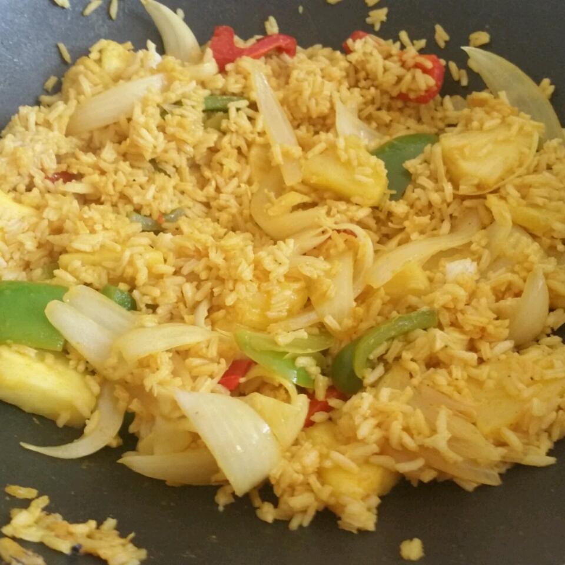

Curry-Pineapple Fried Rice

Description
Fluffy grains of jasmine rice, colourful veggies, sweet juicy pieces of pineapple all tossed in a savoury, slightly sweet Thai fried rice sauce.
Ingredients
- 1½ cups uncooked rice
- 31 tablespoon curry powder
- 2 tablespoons Asian fish sauce
- 2 tablespoons pineapple juice
- 1 tablespoon vegetable oil
- 1 pound boneless chicken meat, cubed
- 1 onion, sliced
- 1 (20 ounce) can pineapple chunks, drained
Steps
-
Step 1
Bring the rice and water to a boil in a saucepan over high heat. Reduce heat to medium-low, cover, and simmer until the rice is tender, and the liquid has been absorbed, 20 to 25 minutes. Set the cooked rice aside. Mix together curry powder, fish sauce, and pineapple juice in a small bowl.
-
Step 2
Heat the vegetable oil in a large skillet or wok over medium-high heat until the oil shimmers, and cook and stir the chicken and onion until the chicken is no longer pink and the onions are translucent, about 5 minutes. Stir in the cooked rice, pineapple chunks, and curry mixture, and cook and stir until the fried rice is hot, 5 to 10 minutes.